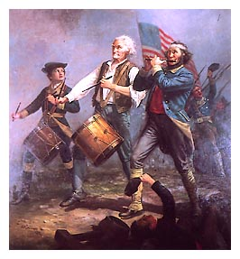

| Jack Mulgrew is my name, and I live near Philadelphia, Pennsylvania. I’ve seen 30
years in this world, 26 of them a farmer or farmer’s son. The other 4 were spent a
private fighting in the Continental
Army for American independence from England. I enlisted in 1777, in my 16th
year, in the spring after planting. The
Continental Congress, our new government, promised me land when our freedom was
won. But by the end of the war, I was penniless, and I had to sell the land they offered
me. Now, I farm the land of my father, which will be mine on his passing. I do not regret
my time with the army. It is my great reward to live in a land that is free and to be able
to say in truth that I had a hand in making it so. It was my good fortune to be at
Yorktown, Virginia, where the Continental Army dealt British general Cornwallis his final defeat, and
to live to tell of it. I kept a diary to record the events, great and small, that I
witnessed or heard of. Here is my accounting of those days. |

Original of the Spirit of '76 hangs in the
Selectman's Room, Marblehead, Massachusetts |